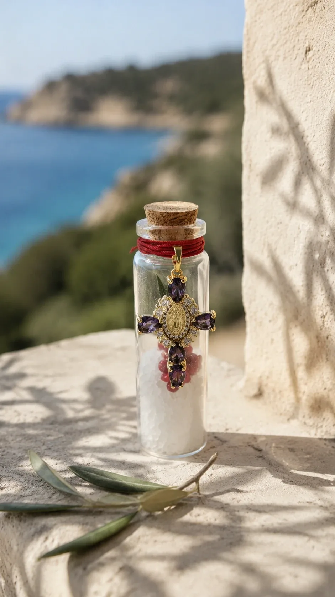

Fiole Rose & Sel
19 €
Gros sel de mer et pétales de rose séchés, posés en couches alternées. Le bouchon de liège est noué d'un fil rouge.
- Verre, liège, fil de coton rouge
- Hauteur : environ 10 cm
Pace è salute
De petites fioles de dévotion, nouées d'un fil rouge comme le veut la tradition. À poser près de la porte, à glisser dans un sac, à offrir à ceux qu'on aime.

La collection
19 €
Gros sel de mer et pétales de rose séchés, posés en couches alternées. Le bouchon de liège est noué d'un fil rouge.
34 €
Sel blanc, baies roses et feuille d'olivier, sous une croix dorée sertie de pierres violettes, avec la Vierge en son cœur.
Ce qu'il y a dans la fiole
On en jette sur le seuil, on en bénit le jour de l'Épiphanie. Le sel garde, le sel purifie : c'est le premier geste des maisons de l'île.
Fleur de Marie, Rose mystique des litanies. Ses pétales séchés rappellent le chapelet, ce « jardin de roses » qu'on égrène.
En Corse, on se méfie de l'ochju. Le fil rouge noué au cou de la fiole reprend ce vieux réflexe de protection, transmis de génération en génération.
Fait main
Avant de commander
Les fioles sont expédiées sous 3 à 5 jours ouvrés depuis la Corse, en lettre suivie. Comptez 2 à 4 jours de plus pour la livraison en France continentale.
4,90 € en France. Offerte dès 50 € d'achat.
Oui : prénom, date de baptême ou de communion, couleur du fil. Écrivez-nous avant de commander.
C'est même pour ça qu'on les fait. Pour une commande de plusieurs fioles (dragées, invités), contactez-nous pour un tarif.
Vous disposez de 14 jours après réception pour changer d'avis, sauf pour les fioles personnalisées. Les détails sont dans nos conditions de vente.
Une question, une commande spéciale ?
On répond à chaque message, en général dans la journée.
Envoyer un e-mail